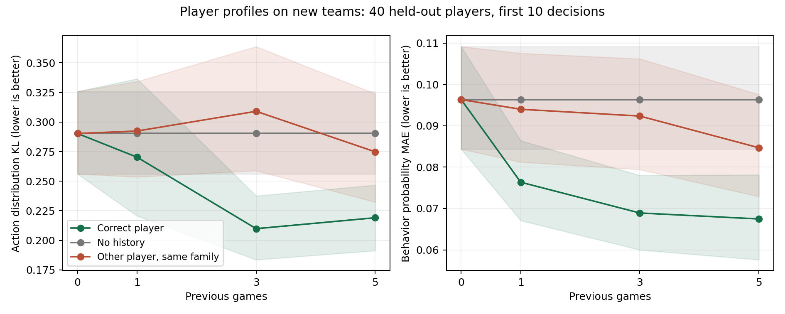
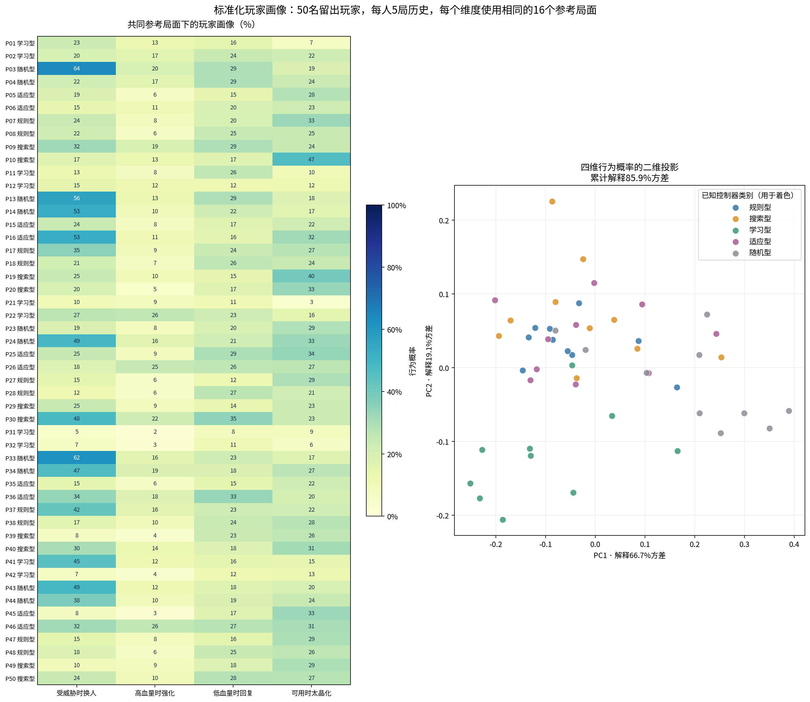

交互演示一：对局事件流与联合信念资料卡（Dossier）更新
展示 JointOpponentModel 如何在对局中依据合法公开事件逐步收紧 1,024 个联合粒子（C/X/M/Z），同时对未揭示属性保留校准后的概率分布，且仅跨局继承玩家级策略记忆 Z。
交互演示二：8 种基线方法多维度对比
切换评测维度，查看联合过滤模型与纯神经预测、Foul Play、Metamon、PokéChamp 及 Qwen 大模型基线在相同观测前缀下的实测表现（28 个完整玩家对局，仅计入未公开配置）。
跨局玩家记忆迁移与行为画像
在 40 名未参与训练的非随机玩家（另含 10 名随机对照）上固定全新队伍，仅改变前 5 局历史来源，评测模型对玩家策略风格 Z 的跨局迁移能力。
| 跨局记忆条件（5 局历史） | 行动 NLL ↓ | 行动分布 KL ↓ | 行为画像 MAE ↓ | 行动 Top-1 ↑ |
|---|---|---|---|---|
| 正确玩家历史 | 1.4530 | 0.2191 | 0.0675 | 46.75% |
| 无历史（冷启动） | 1.5154 | 0.2903 | 0.0963 | 45.25% |
| 其他玩家历史（负对照） | 1.5107 | 0.2748 | 0.0847 | 47.25% |
注：跨局记忆的主要增益体现在行动概率分布校准（NLL / KL）与行为画像误差（MAE 降 29.9%），对单步 argmax Top-1 的提升尚不稳定。

